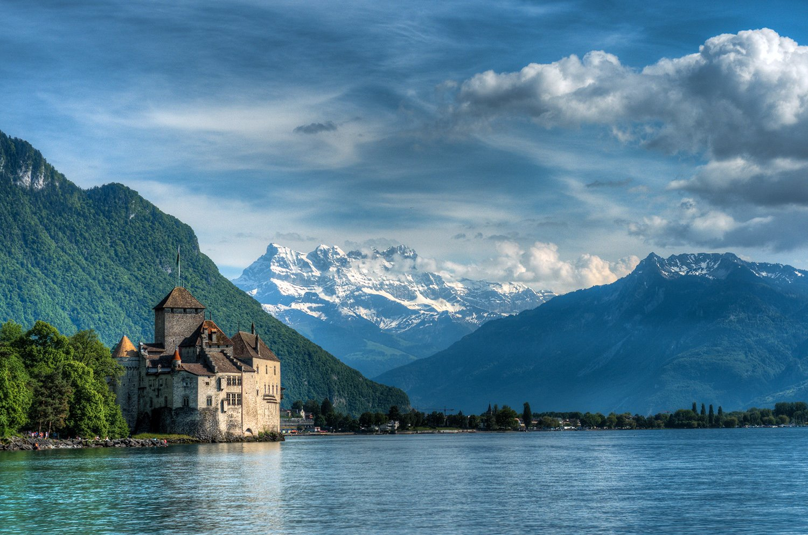

Suiza es lugar de culto para el amante del queso.
Además de los fabricados en las poblaciones de Gruyeres o Emmenthal,
existen otras muchas otras variedades que merece la pena descubrir.
Suiza es uno de los países más ricos y conservadores de Europa.
El servicio es excelente y están muy acostumbrados a los extranjeros.
Sin embargo en general no son gente abierta,
si bien es verdad que esto está cambiando entre la juventud.
La gastronomía es muy buena para un viaje corto pero puede resultar
pesada para una estancia más larga.
El queso, la ternera y la patata son la base de su gastronomía
tradicional y
poco a poco se van introduciendo verduras y hortalizas
de importación.
No dejes de probar las infinitas variedades de chocolate.